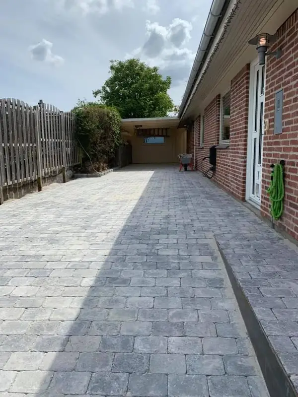
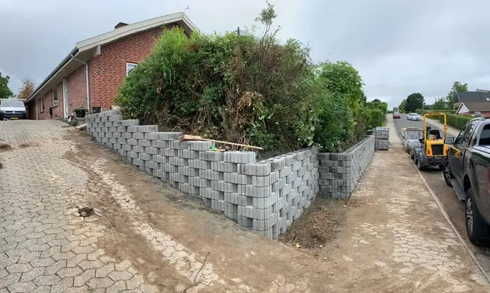
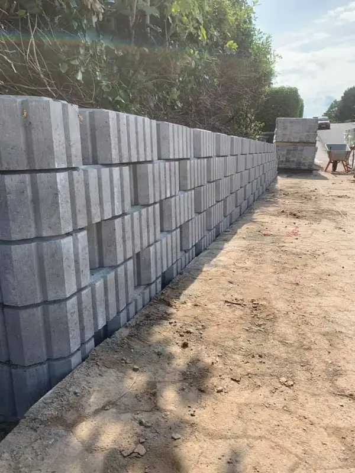

Grunden faldt mod vejen, og den gamle indkørsel kunne ikke holde til det. Løsningen blev en ny belægning i grå betonbrosten og en støttemur i Super 8-blokke hele vejen rundt om hjørnet.



Grunden ligger på skrå, og det gav to problemer på én gang: en indkørsel der satte sig og blev ujævn, og et terrænspring mod vejen der skulle holdes tilbage. Man kan ikke løse det ene uden det andet.
Jeg startede med muren. Den er bygget i Super 8-støtteblokke, sat skifte for skifte med forskydning bagud, så jordtrykket bliver ført ned i fundamentet i stedet for at skubbe muren udad. Bagsiden blev fyldt op med drænende materiale — uden det bygger der vandtryk op, og så er det ligegyldigt hvor pænt muren er sat.
Indkørslen blev lagt i grå betonbrosten. Det er et robust valg hvor der kører bil hver dag, og de små sten fordeler belastningen bedre end store fliser når underlaget arbejder med frost og tø.
Terrænet er sikret, indkørslen ligger plan, og de to ting spiller sammen i stedet for at modarbejde hinanden. Det er den slags opgave hvor det vigtigste arbejde ligger under jorden.
Ring eller skriv, så tager vi en uforpligtende snak om dit projekt. Jeg vender tilbage inden for 24 timer.
Kontakt mig